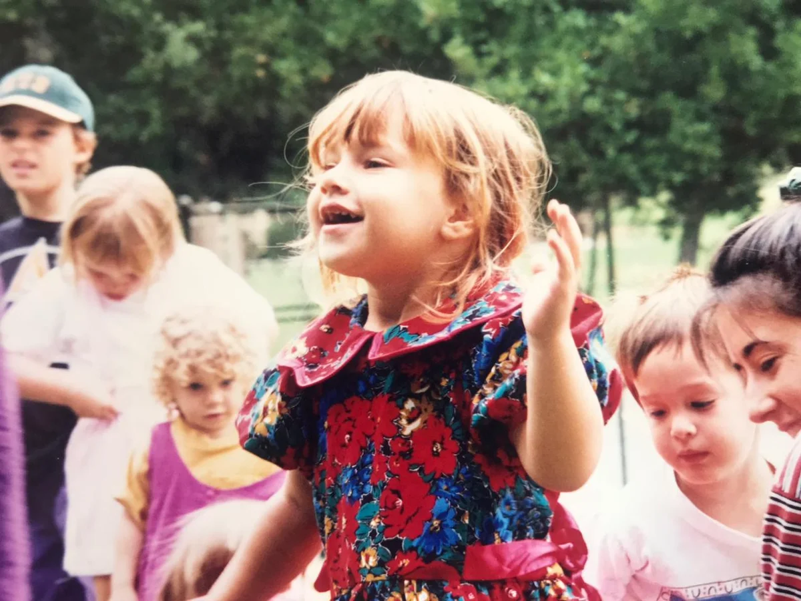
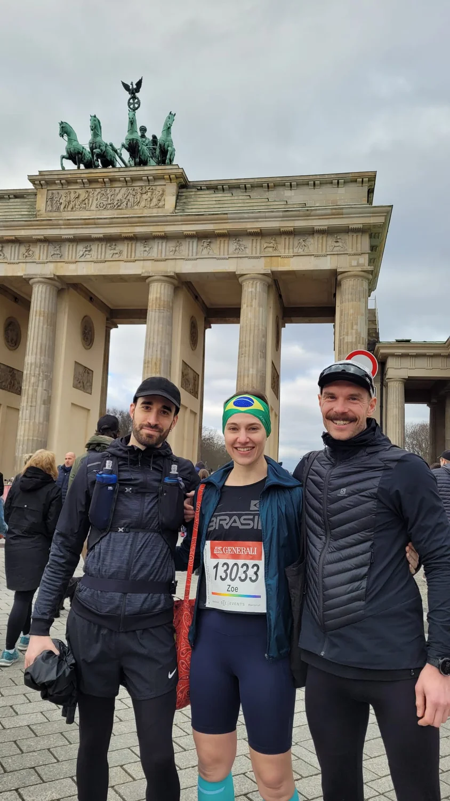
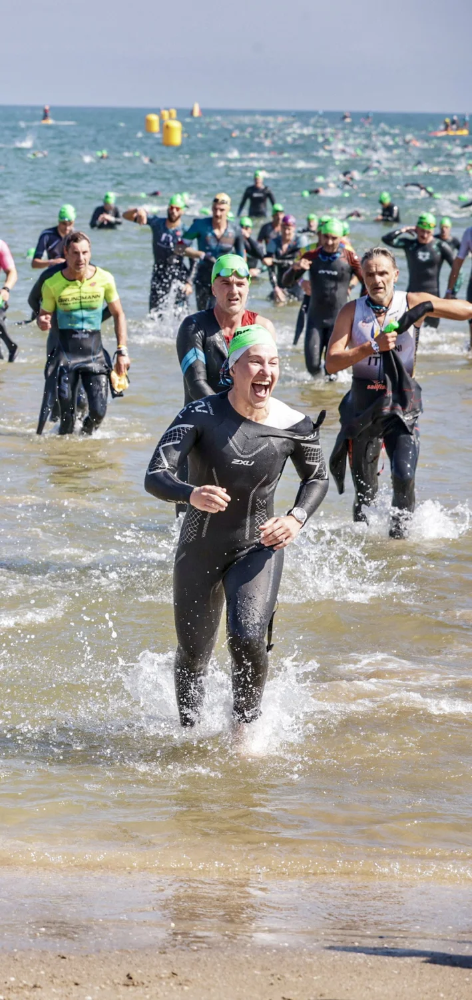
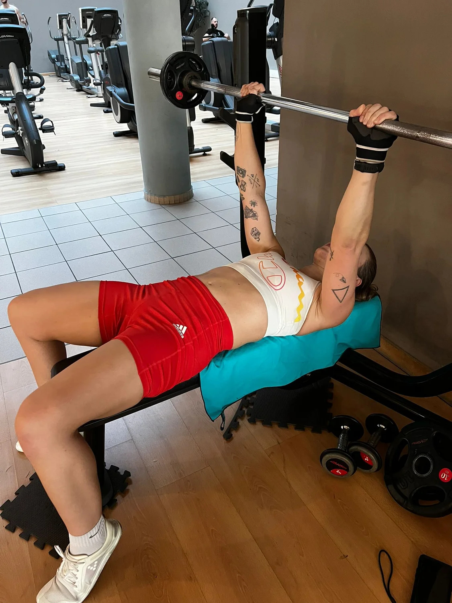
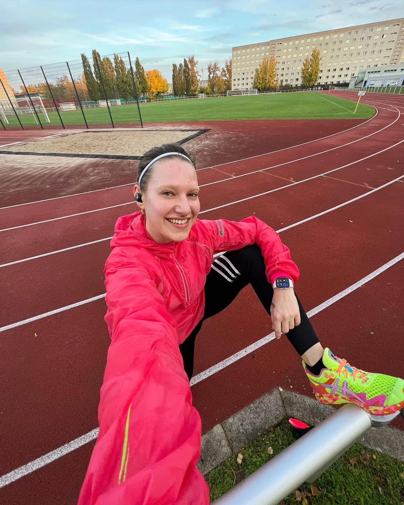
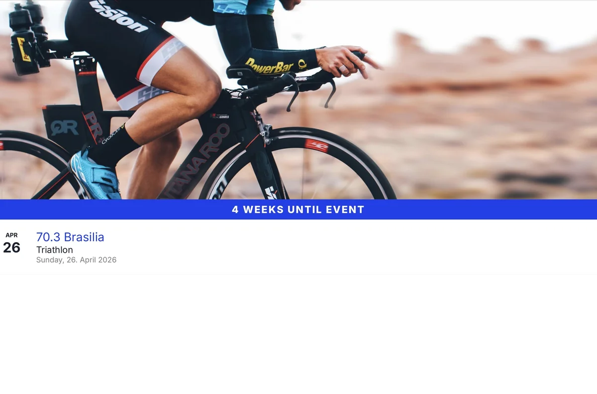

Dois continentes, três idiomas, seis capítulos. Não é um caminho reto — mas é um caminho que leva até onde Zoe quer estar no dia 12 de setembro de 2026: dentro da água, em Nice.
Uma infância entre cartas de Pokémon, Harry Potter e Tom Sawyer. Cinco fomes dentro dela: horizonte, aventura, justiça, inteligência, humor. Uma base que nunca foi colocada em dúvida — mesmo quando os pais não tinham tudo fácil.

21,1 quilômetros atravessando Berlim. Largada no Portão de Brandemburgo, faixa do Brasil na cabeça, número 13033. Sem plano, sem coach, sem ideia de carreira. Só: eu consigo. A linha onde tudo começou. Depois da prova ela já sabia: tem mais.

Triatlo. Três modalidades em vez de uma. Aprender a nadar já adulta. Levar o ciclismo a sério. E o momento na praia de Cervia, saindo do mar rindo, com a medalha no horizonte — ali estava decidido: esse é o caminho.

Musculação, atletismo, repetição. O corpo aprende o que ainda não sabe. Músculo por músculo. A transformação não acontece num dia — ela acontece todos os dias.

Cinco vezes por semana natação, cinco vezes bike, cinco vezes corrida. Ciência por trás: watts, limiar de lactato, plano nutricional. A sala de casa vira indoor-trainer, o Tempelhof vira segunda casa. Disciplina não como castigo — como linguagem.

1,9 km de natação no Mediterrâneo. 90 km de bike pela Côte d'Azur. 21,1 km de corrida na Promenade des Anglais. Três anos depois da primeira meia maratona, ela está numa largada de Mundial. Esse não é o fim — é o ponto onde tudo se encontra.

O que a move — e o que você vê quando a vê correr.
Você precisa de espaços maiores que o seu cotidiano. O infinito como lar — não como fuga.
Você procura o arriscado, o não mapeado. Isso não é inquietação — é vitalidade pedindo saída.
Você procura coisas que no fim dão certo. Inteligência moral acesa cedo.
Você vê os sistemas antes dos outros perceberem. Reconhecimento de padrões como estratégia de sobrevivência.
Humor como espaço para respirar, leveza como resistência. Você sabe: o riso carrega o que as lágrimas não seguram.
„You're alive when others have already given up."